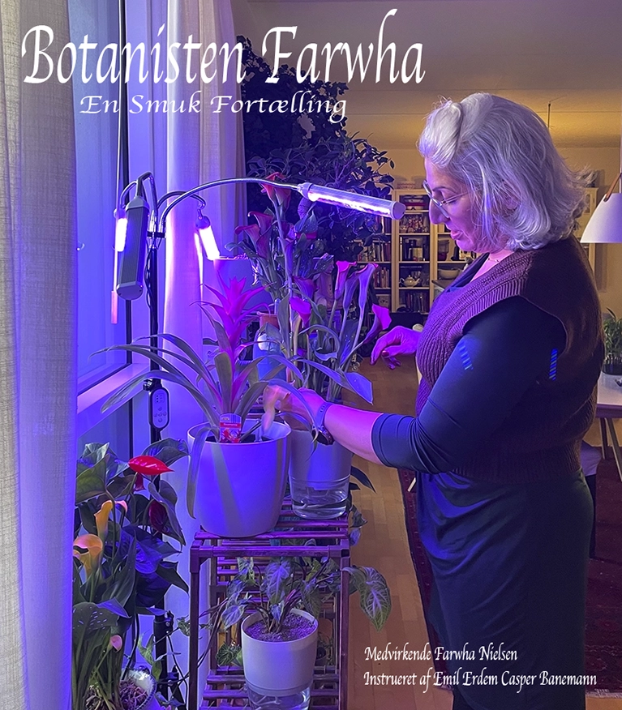
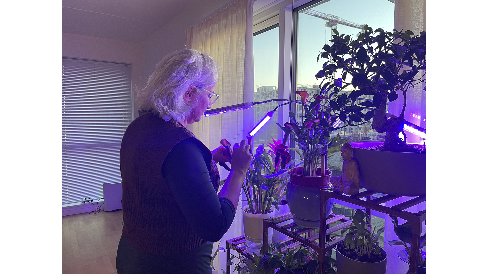
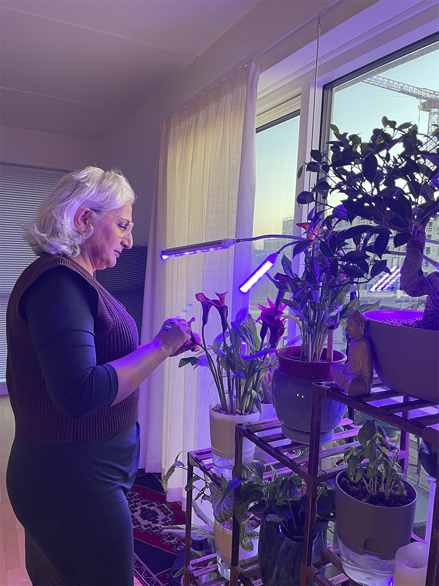
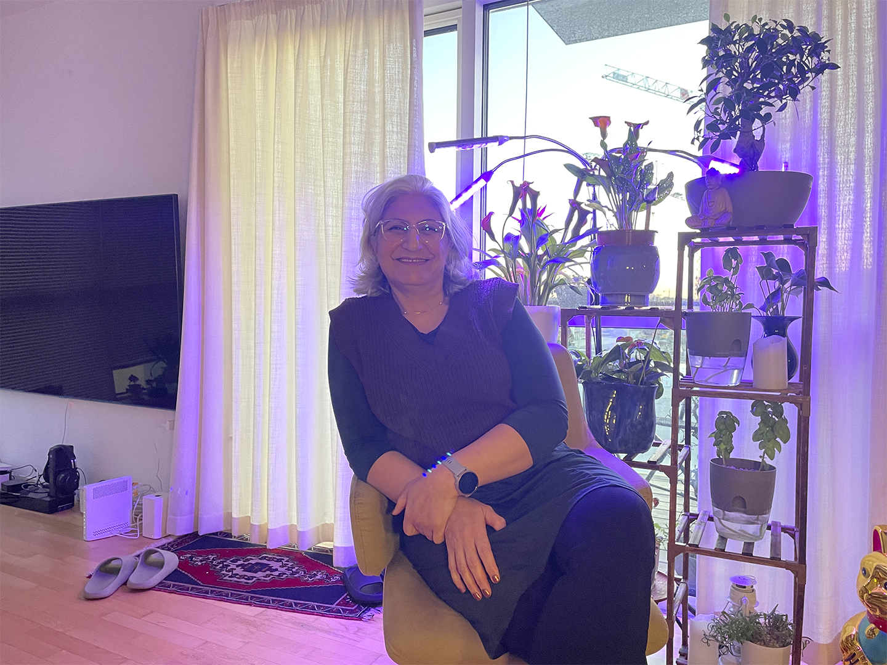
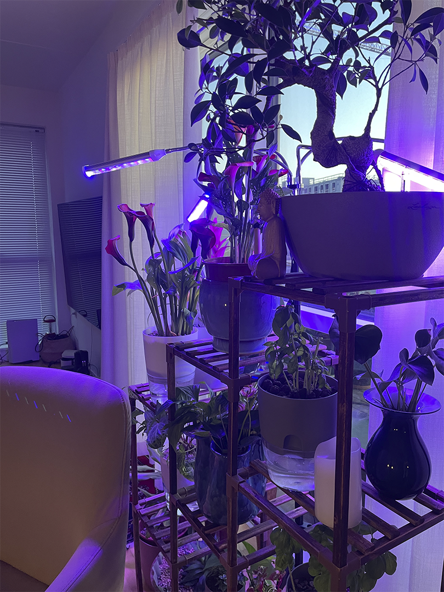

Botanisten Farwha
Sprog: Dansk
Instruktøre: Emil Erdem & Casper Banemann
Medvirkende Farwha Nielsen
Farwha Nielsen var en passioneret hobby-botaniker, og hendes kærlighed til planter hjalp hende igennem en svær tid i sit liv. Farwha brugte sin tid på at udforske og studere forskellige plantearter. Hendes hobby gav hende en følelse af formål og en distraktion fra sorgen. Hun fandt stor glæde og tilfredshed i at lære om planters egenskaber, deres vækstcyklusser og deres evne til at helbrede og trives under forskellige betingelser. Samlet set har hendes hobby som botaniker været en positiv indflydelse i hendes liv og hjulpet hende igennem en svær tid.